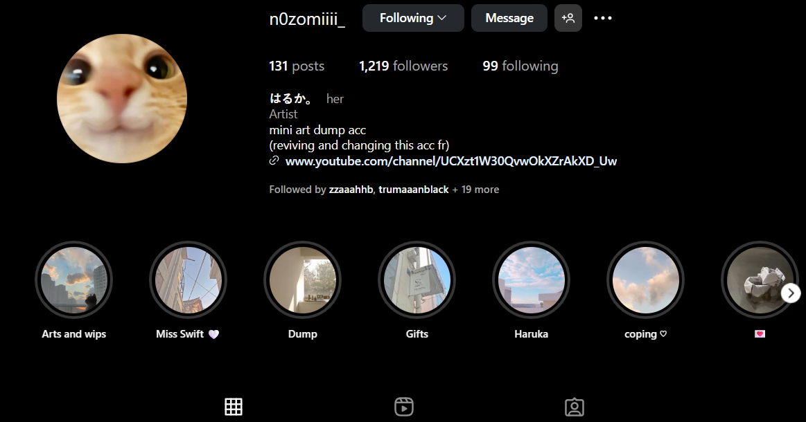

This side is for navigation links
MY PROJECTSSSS
Here is a link to my youtube channel where i post my editing videos.I have been posting here ever since 2018 and since then, my channel grew.
@HarukaEditsUwUI also have an art channel where i post all of my artworks. Its made from 2019.
@nOzomiiii_ Fun Fact About me
I am a shy person so making something and actually get attention from people through social media boosted my confidence to pursue art becuase it is what i belive where i'm good at.